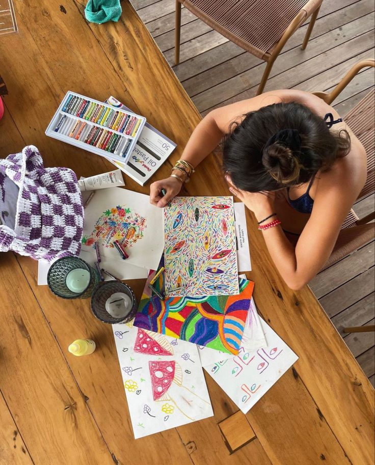

Hola, mi nombre es Linda Ximena Sánchez Franco y este es mi proyecto para la materia de Programación Web. Aquí exploraremos cómo el arte influye en nuestro día a día.

Puedes seguir mi trabajo escolar en mi red social: